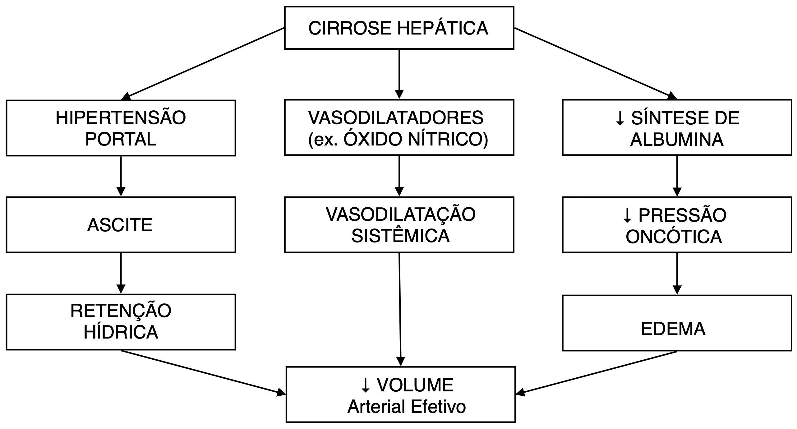
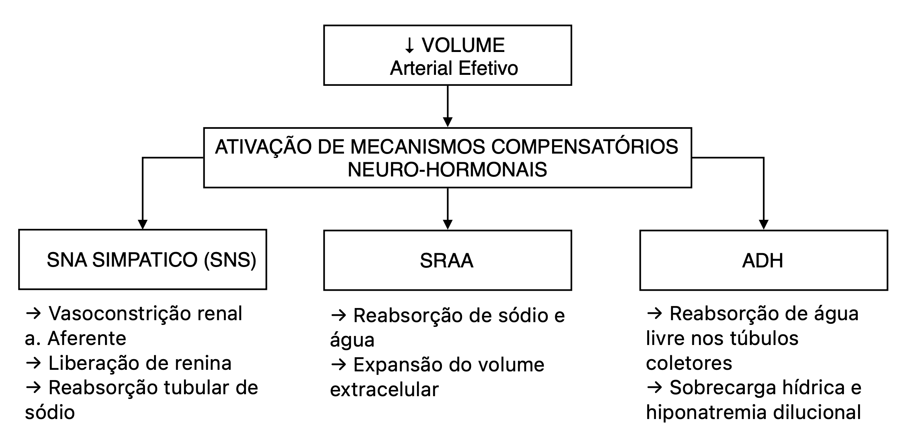

Fisiopatologia do Edema na Cirrose Hepática


1. Fibrose Hepática e Hipertensão Portal
Na cirrose, o tecido hepático normal é gradualmente substituído por tecido fibroso. Essa fibrose altera a arquitetura hepática e aumenta a resistência ao fluxo sanguíneo na veia porta, levando à hipertensão portal. Como consequência:
- O sangue se acumula nos vasos que drenam para o sistema porta.
- Há aumento da pressão nos capilares esplâncnicos e intestinais.
- Isso favorece o extravasamento de líquido para a cavidade abdominal, formando ascite.
2. Hipoproteinemia (Hipoalbuminemia)
O fígado fibrosado tem capacidade reduzida de sintetizar albumina, principal proteína responsável pela manutenção da pressão oncótica plasmática. A redução da albumina causa:
- Diminuição da pressão oncótica intravascular.
- Maior propensão ao extravasamento de líquido para o interstício.
- Desenvolvimento de edema periférico.
3. Vasodilatação Sistêmica e Redução do Volume Circulante Efetivo
Na cirrose ocorre vasodilatação sistêmica, especialmente no território esplâncnico, causada por substâncias vasodilatadoras como o óxido nítrico (NO). Esse processo leva a:
- Redução da resistência vascular sistêmica.
- Queda do volume arterial efetivo percebido pelo organismo.
- Ativação de mecanismos compensatórios para manter a perfusão tecidual.
4. Ativação de Mecanismos compensatórios Neuro-Hormonais
a) Sistema Nervoso Simpático (SNS)
aferência: barorreceptores detectam hipovolemia arterial efetiva (devido à vasodilatação esplâncnica).
eferências:
- A norepinefrina liberada pelas terminações simpáticas estimula receptores 𝛼₁-adrenérgicos, causando vasoconstrição renal, principalmente da arteríola aferente → isso reduz a taxa de filtração glomerular (TFG), contribuindo para a preservação de sódio e água pelo organismo.
- Estimula a liberação de renina por meio de receptores β₁-adrenérgicos nas células justaglomerulares → ativa o sistema renina-angiotensina-aldosterona (SRAA) → promove retenção de sódio e água.
- Aumenta a reabsorção tubular de sódio no túbulo proximal por meio de efeitos adrenérgicos diretos.
b) Sistema Renina-Angiotensina-Aldosterona (SRAA)
- Gatilhos:
- Ativação do sistema nervoso simpático via receptores β₁-adrenérgicos nas células justaglomerulares.
- Redução da perfusão renal (pressão de perfusão diminuída nas arteríolas aferentes).
- Diminuição da concentração de sódio no túbulo distal (detectada pela mácula densa).
- Efeitos:
- Aumenta a reabsorção de sódio e água nos túbulos renais.
- Promove retenção volêmica e expansão do fluido extracelular.
c) Hormônio Antidiurético (ADH)
- Gatilhos:
- Percepção de hipovolemia arterial efetiva por barorreceptores de alta pressão (aórticos e carotídeos), mesmo na presença de volume extracelular total aumentado.
- Aumento da osmolalidade plasmática, embora na cirrose o principal estímulo seja não osmótico (hipoperfusão).
- Efeitos:
- Atua nos túbulos coletores renais, promovendo a reabsorção de água livre via canais de aquaporina-2.
- Contribui para a sobrecarga hídrica e agrava a hiponatremia dilucional.
5. Consequências Finais
A combinação de:
- Aumento da pressão hidrostática (hipertensão portal),
- Redução da pressão oncótica (hipoalbuminemia),
- Retenção de sódio e água (ativação do SRAA, SNS e ADH),
- E vasodilatação sistêmica (óxido nítrico)
leva à formação de ascite e edema periférico.
6. Ciclo Vicioso
O extravasamento contínuo de líquido piora a perfusão renal, perpetuando a ativação neuro-hormonal e agravando o quadro de retenção hídrica. Assim, estabelece-se um ciclo vicioso que sustenta e piora o edema na cirrose hepática.
Referências
José Baddini Martinez, Márcio Dantas, Júlio César Voltarelli. Semiologia geral e especializada. 2ª ed. Ed. dos Autores, 2024.
Lindor, K.D. Pathogenesis of ascites in patients with cirrhosis. Uptodate, 2023.
Costanzo, L. S. Fisiologia. 7ª edição. Elsevier, 2020.